CODING AGENTS AS PIXEL WORLD MODELS
traex/DeepSeek-V4.1-Flash · material_0000
点击播放 · 原生 RGB 像素
逐轮保存的候选
回放视频、检查图与代码变化。
每份候选均可单独播放。实际图片检查记录在下方工具轨迹中。
候选 01播放与检查图
点击播放 · 原生 RGB 像素

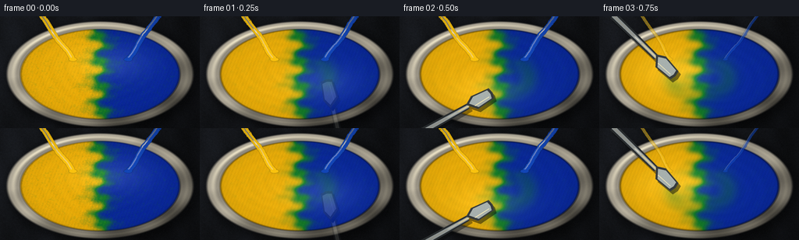
展开代码变化
--- 上一保存版本
+++ 本次保存版本
@@ -0,0 +1,407 @@
+from pathlib import Path
+
+import numpy as np
+from PIL import Image, ImageDraw, ImageFilter
+
+import artifact_io
+
+
+ROOT = Path(__file__).resolve().parent
+WIDTH, HEIGHT = 256, 144
+SIM_W, SIM_H = 512, 288
+FPS = 4.0
+FRAME_COUNT = 20
+
+
+def bilinear_sample(field, x, y):
+ x = np.clip(x, 0.0, SIM_W - 1.001)
+ y = np.clip(y, 0.0, SIM_H - 1.001)
+ x0 = x.astype(np.int32)
+ y0 = y.astype(np.int32)
+ tx = x - x0
+ ty = y - y0
+ x1 = np.minimum(x0 + 1, SIM_W - 1)
+ y1 = np.minimum(y0 + 1, SIM_H - 1)
+ top = field[y0, x0] * (1.0 - tx) + field[y0, x1] * tx
+ bottom = field[y1, x0] * (1.0 - tx) + field[y1, x1] * tx
+ return top * (1.0 - ty) + bottom * ty
+
+
+def box_blur(field, radius=1, passes=1):
+ out = field.astype(np.float32, copy=False)
+ for _ in range(passes):
+ acc = np.zeros_like(out)
+ count = 0
+ for dy in range(-radius, radius + 1):
+ for dx in range(-radius, radius + 1):
+ acc += np.roll(np.roll(out, dy, axis=0), dx, axis=1)
+ count += 1
+ out = acc / count
+ return out
+
+
+def smoothstep(edge0, edge1, value):
+ t = np.clip((value - edge0) / (edge1 - edge0), 0.0, 1.0)
+ return t * t * (3.0 - 2.0 * t)
+
+
+def make_geometry():
+ yy, xx = np.mgrid[0:SIM_H, 0:SIM_W].astype(np.float32)
+ cx, cy = SIM_W * 0.5, SIM_H * 0.515
+ rx, ry = SIM_W * 0.472, SIM_H * 0.475
+ qx = (xx - cx) / rx
+ qy = (yy - cy) / ry
+ rr = np.sqrt(qx * qx + qy * qy)
+ return xx, yy, cx, cy, rx, ry, qx, qy, rr
+
+
+XX, YY, CX, CY, RX, RY, QX, QY, RR = make_geometry()
+INNER_R = 0.855
+PAINT_MASK = (RR < INNER_R).astype(np.float32)
+PAINT_EDGE = 1.0 - smoothstep(INNER_R - 0.018, INNER_R, RR)
+PAINT_MASK *= PAINT_EDGE
+
+
+def make_background():
+ rng = np.random.default_rng(1729)
+ fine = rng.normal(0.0, 1.0, (SIM_H, SIM_W)).astype(np.float32)
+ fine = box_blur(fine, radius=1, passes=2)
+ fine /= max(float(np.std(fine)), 1e-5)
+ grain = (
+ 0.45 * np.sin(XX * 0.036 + YY * 0.012)
+ + 0.25 * np.sin(XX * 0.091 - YY * 0.034)
+ + 0.13 * fine
+ )
+ light = np.clip(1.10 - 0.45 * (XX / SIM_W) + 0.18 * (1.0 - YY / SIM_H), 0.35, 1.2)
+ base = np.stack(
+ [
+ (0.075 + 0.020 * grain) * light,
+ (0.082 + 0.022 * grain) * light,
+ (0.095 + 0.028 * grain) * light,
+ ],
+ axis=-1,
+ )
+
+ # Soft shadow beneath the bowl, falling toward the lower right.
+ shadow_r = np.sqrt(((QX - 0.035) / 1.03) ** 2 + ((QY - 0.055) / 1.06) ** 2)
+ shadow = 1.0 - 0.48 * (1.0 - smoothstep(0.87, 1.12, shadow_r))
+ base *= shadow[..., None]
+ return np.clip(base, 0.0, 1.0)
+
+
+BACKGROUND = make_background()
+
+
+def make_initial_paint():
+ rng = np.random.default_rng(3901)
+ wave = (
+ 0.055 * np.sin(QY * 14.0 + QX * 4.0)
+ + 0.035 * np.sin(QY * 27.0 - QX * 7.0)
+ + 0.020 * np.sin(QX * 34.0 + QY * 12.0)
+ )
+ split = QX + wave
+ yellow = 1.0 / (1.0 + np.exp(split * 21.0))
+ blue = 1.0 / (1.0 + np.exp(-split * 21.0))
+ edge_noise = rng.normal(0.0, 1.0, (SIM_H, SIM_W)).astype(np.float32)
+ edge_noise = box_blur(edge_noise, radius=1, passes=2)
+ edge_noise /= max(float(np.std(edge_noise)), 1e-5)
+ yellow = np.clip(yellow + 0.020 * edge_noise, 0.0, 1.0) * PAINT_MASK
+ blue = np.clip(blue - 0.020 * edge_noise, 0.0, 1.0) * PAINT_MASK
+
+ # Make the two supplied volumes exactly equal inside the bowl.
+ total = max(float(yellow.sum()), 1.0)
+ blue *= total / max(float(blue.sum()), 1.0)
+ return yellow.astype(np.float32), blue.astype(np.float32)
+
+
+def spoon_position(t):
+ # Two quick passes around the bowl create strong folding and shear.
+ phase = 2.0 * np.pi * (0.82 * t) - 0.70
+ px = CX + (SIM_W * 0.145) * np.cos(phase) + 10.0 * np.sin(phase * 2.1)
+ py = CY + (SIM_H * 0.185) * np.sin(phase) - 4.0 * np.cos(phase * 1.7)
+ return float(px), float(py), float(phase)
+
+
+def stir_velocity(t):
+ dx = XX - CX
+ dy = YY - CY
+ r = np.sqrt(dx * dx + dy * dy) / (RY * 0.83)
+
+ # Differential rotation: fast near the middle, nearly still at the ceramic wall.
+ angular = 4.1 * np.exp(-0.78 * r * r) + 0.9
+ vx = -dy * angular / max(RY, 1.0)
+ vy = dx * angular / max(RY, 1.0)
+
+ # The moving spoon drives a compact, energetic wake.
+ sx, sy, phase = spoon_position(t)
+ for sign, scale in ((1.0, 1.0), (-0.78, 0.72)):
+ ox = sign * (SIM_W * 0.22) * np.cos(phase * 1.03 + 1.15)
+ oy = sign * (SIM_H * 0.26) * np.sin(phase * 1.03 - 0.35)
+ vcx = sx + ox
+ vcy = sy + oy
+ ddx = XX - vcx
+ ddy = YY - vcy
+ sigma = RY * 0.29 * scale
+ g = np.exp(-(ddx * ddx + ddy * ddy) / (2.0 * sigma * sigma))
+ strength = (5.9 if sign > 0 else -4.3) * scale
+ vx += -ddy / sigma * strength * g
+ vy += ddx / sigma * strength * g
+
+ # Gentle wall friction and a small tangential edge current.
+ wall = np.clip((r - 0.82) / 0.18, 0.0, 1.0)
+ vx *= 1.0 - 0.84 * wall
+ vy *= 1.0 - 0.84 * wall
+ return vx, vy
+
+
+def advance_paint(yellow, blue, t, dt):
+ vx, vy = stir_velocity(t)
+ bx = XX - vx * dt
+ by = YY - vy * dt
+ new_yellow = bilinear_sample(yellow, bx, by)
+ new_blue = bilinear_sample(blue, bx, by)
+
+ # Weak diffusion, with extra micro-mixing as lamellae become thin.
+ radius = 1 if t < 2.9 else 2
+ new_yellow = box_blur(new_yellow, radius=radius, passes=1)
+ new_blue = box_blur(new_blue, radius=radius, passes=1)
+ new_yellow *= PAINT_MASK
+ new_blue *= PAINT_MASK
+
+ # Paint at the moving blade is locally homogenized.
+ sx, sy, _ = spoon_position(t)
+ g = np.exp(-((XX - sx) ** 2 + (YY - sy) ** 2) / (2.0 * (RY * 0.11) ** 2))
+ mix = np.clip(0.12 * g + max(0.0, t - 3.55) * 0.018, 0.0, 0.17)
+ mean = 0.5 * (new_yellow + new_blue)
+ new_yellow += mix * (mean - new_yellow)
+ new_blue += mix * (mean - new_blue)
+
+ # Late-stage homogenization gives a convincing "fully blended" finish.
+ if t > 3.35:
+ blend = np.clip((t - 3.35) / 1.55, 0.0, 1.0)
+ blend = blend * blend * (3.0 - 2.0 * blend)
+ target = 0.5 * (new_yellow + new_blue)
+ amount = 0.105 * blend
+ new_yellow += amount * (target - new_yellow)
+ new_blue += amount * (target - new_blue)
+ return new_yellow.astype(np.float32), new_blue.astype(np.float32)
+
+
+def mix_pigment(yellow, blue, t):
+ total = yellow + blue + 1e-5
+ w = np.clip(blue / total, 0.0, 1.0)
+ # A two-stage yellow -> green -> blue path approximates subtractive paint mixing.
+ ycol = np.array([0.98, 0.72, 0.035], dtype=np.float32)
+ gcol = np.array([0.075, 0.50, 0.16], dtype=np.float32)
+ bcol = np.array([0.035, 0.16, 0.64], dtype=np.float32)
+ lower = (1.0 - 2.0 * w)[..., None] * ycol + (2.0 * w)[..., None] * gcol
+ upper = (2.0 - 2.0 * w)[..., None] * gcol + (2.0 * w - 1.0)[..., None] * bcol
+ color = np.where((w < 0.5)[..., None], lower, upper)
+
+ # Fine pigment grain remains visible after mixing.
+ grain = (
+ np.sin(XX * 0.73 + YY * 0.29)
+ + np.sin(XX * 1.47 - YY * 0.91)
+ + 0.55 * np.sin(XX * 2.33 + YY * 1.81)
+ )
+ color *= (1.0 + 0.018 * grain[..., None])
+
+ # Wet paint has a darker, saturated body and bright reflected highlights.
+ coverage = np.clip(total / 0.92, 0.0, 1.0)
+ color *= (0.72 + 0.28 * coverage[..., None])
+ return np.clip(color, 0.0, 1.0)
+
+
+def render_base(yellow, blue, t):
+ color = BACKGROUND.copy()
+
+ # Outer ceramic body and a raised lip.
+ rim_outer = 1.0 - smoothstep(0.965, 1.005, RR)
+ rim_inner = 1.0 - smoothstep(INNER_R - 0.01, INNER_R + 0.012, RR)
+ rim_band = np.clip(rim_outer - rim_inner, 0.0, 1.0)
+ rim_shade = np.clip(0.83 - 0.25 * QX - 0.30 * QY + 0.10 * np.sin(8.0 * np.arctan2(QY, QX)), 0.36, 1.0)
+ ceramic = np.stack(
+ [
+ 0.73 * rim_shade,
+ 0.70 * rim_shade,
+ 0.63 * rim_shade,
+ ],
+ axis=-1,
+ )
+ color = color * (1.0 - rim_outer[..., None]) + ceramic * rim_outer[..., None]
+
+ # Bowl interior wall recedes below the lip.
+ wall_mask = np.clip(rim_inner - PAINT_MASK, 0.0, 1.0)
+ wall_light = np.clip(0.63 - 0.34 * QX - 0.39 * QY + 0.18 * (RR - INNER_R) / 0.14, 0.16, 0.70)
+ wall = np.stack([0.62 * wall_light, 0.59 * wall_light, 0.53 * wall_light], axis=-1)
+ color = color * (1.0 - wall_mask[..., None]) + wall * wall_mask[..., None]
+
+ # Rim highlights and shadow line.
+ theta = np.arctan2(QY, QX)
+ highlight = np.exp(-((RR - 0.922) / 0.021) ** 2) * (0.25 + 0.75 * np.clip(np.cos(theta + 2.25), 0.0, 1.0) ** 4)
+ color += highlight[..., None] * np.array([0.26, 0.25, 0.20], dtype=np.float32)
+ lower_shadow = np.exp(-((RR - 0.875) / 0.022) ** 2) * np.clip(-np.cos(theta - 0.78), 0.0, 1.0)
+ color *= (1.0 - 0.20 * lower_shadow[..., None])
+
+ paint = mix_pigment(yellow, blue, t)
+
+ # Broad wet-sheen and fine ripples across the moving surface.
+ sx, sy, phase = spoon_position(t)
+ radial = np.sqrt(((XX - CX) / RX) ** 2 + ((YY - CY) / RY) ** 2)
+ ripple_phase = (
+ radial * 42.0
+ - t * 10.0
+ + 2.8 * np.sin(3.0 * np.arctan2(YY - CY, XX - CX) + phase)
+ )
+ ripple = 0.5 + 0.5 * np.sin(ripple_phase)
+ ripple *= np.clip(0.22 + (t / 5.0) * 0.35, 0.0, 0.55)
+ spoon_wake = np.exp(-(((XX - sx) / (RX * 0.46)) ** 2 + ((YY - sy) / (RY * 0.38)) ** 2))
+
+ light_dir = np.array([-0.54, -0.74], dtype=np.float32)
+ relx = (XX - CX) / RX
+ rely = (YY - CY) / RY
+ slope_x = 0.035 * np.cos(ripple_phase) + 0.055 * relx * spoon_wake
+ slope_y = 0.035 * np.sin(ripple_phase) + 0.055 * rely * spoon_wake
+ diffuse = np.clip(0.92 - 0.18 * (slope_x * light_dir[0] + slope_y * light_dir[1]), 0.55, 1.14)
+ paint *= diffuse[..., None]
+ sheen = (0.07 * ripple + 0.20 * spoon_wake) * np.clip(1.0 - RR, 0.0, 1.0)
+ paint += sheen[..., None] * np.array([0.68, 0.70, 0.56], dtype=np.float32)
+
+ # Wet rim where paint meets the bowl wall.
+ contact = np.exp(-((RR - INNER_R + 0.015) / 0.012) ** 2)
+ paint *= (1.0 - 0.30 * contact[..., None])
+ color = color * (1.0 - PAINT_MASK[..., None]) + paint * PAINT_MASK[..., None]
+ return np.clip(color, 0.0, 1.0)
+
+
+def add_pour_streams(image, t):
+ if t > 1.02:
+ return image
+ strength = float(np.clip((1.05 - t) / 0.48, 0.0, 1.0))
+ rgba = Image.new("RGBA", (SIM_W, SIM_H), (0, 0, 0, 0))
+ draw = ImageDraw.Draw(rgba)
+ for side, color in (
+ (-1, (249, 194, 15, 255)),
+ (1, (18, 69, 181, 255)),
+ ):
+ start_x = CX + side * SIM_W * 0.31 + 4.0 * np.sin(t * 10.0 + side)
+ start_y = -20
+ end_x = CX + side * SIM_W * 0.13 + 5.0 * np.sin(t * 8.0 + side)
+ end_y = CY - SIM_H * 0.13
+ points = []
+ for i in range(28):
+ u = i / 27.0
+ x = start_x * (1.0 - u) + end_x * u + 4.0 * np.sin(u * 9.0 + t * 12.0) * u
+ y = start_y * (1.0 - u) + end_y * u
+ points.append((x, y))
+ width = max(7, int(15 * strength))
+ draw.line(points, fill=color, width=width, joint="curve")
+ draw.line([(x - 2, y - 2) for x, y in points], fill=(255, 255, 255, 100), width=max(1, width // 6))
+ px, py = points[-1]
+ draw.ellipse((px - width * 0.72, py - width * 0.30, px + width * 0.72, py + width * 0.30), fill=color)
+ rgba = rgba.filter(ImageFilter.GaussianBlur(0.55))
+ overlay = np.asarray(rgba, dtype=np.float32) / 255.0
+ alpha = overlay[..., 3:4] * strength
+ return image * (1.0 - alpha) + overlay[..., :3] * alpha
+
+
+def draw_spoon(image, t):
+ if t < 0.18 or t > 4.86:
+ return image
+ appear = float(np.clip((t - 0.18) / 0.32, 0.0, 1.0))
+ disappear = float(np.clip((4.86 - t) / 0.42, 0.0, 1.0))
+ opacity = min(appear, disappear)
+ sx, sy, phase = spoon_position(t)
+
+ scale = 3
+ canvas = Image.new("RGBA", (SIM_W * scale, SIM_H * scale), (0, 0, 0, 0))
+ draw = ImageDraw.Draw(canvas)
+ cx, cy = sx * scale, sy * scale
+ angle = phase + np.pi * 0.24
+ ux, uy = np.cos(angle), np.sin(angle)
+ vx, vy = -uy, ux
+ handle_start = (cx + ux * 210 * scale, cy + uy * 210 * scale)
+ handle_end = (cx + ux * 55 * scale, cy + uy * 55 * scale)
+
+ def quad(a, b, wa, wb):
+ return [
+ (a[0] + vx * wa, a[1] + vy * wa),
+ (b[0] + vx * wb, b[1] + vy * wb),
+ (b[0] - vx * wb, b[1] - vy * wb),
+ (a[0] - vx * wa, a[1] - vy * wa),
+ ]
+
+ shadow_offset = (5 * scale, 7 * scale)
+ shadow_quad = [(x + shadow_offset[0], y + shadow_offset[1]) for x, y in quad(handle_start, handle_end, 11 * scale, 8 * scale)]
+ draw.polygon(shadow_quad, fill=(5, 7, 8, int(100 * opacity)))
+
+ draw.polygon(quad(handle_start, handle_end, 10.5 * scale, 7.5 * scale), fill=(44, 48, 50, int(255 * opacity)))
+ draw.polygon(quad(handle_start, handle_end, 5.4 * scale, 3.8 * scale), fill=(157, 164, 163, int(255 * opacity)))
+ draw.polygon(quad(handle_start, handle_end, 1.8 * scale, 1.2 * scale), fill=(232, 232, 218, int(170 * opacity)))
+
+ # Broad spoon blade, seen from above.
+ blade_center = (cx + ux * 19 * scale, cy + uy * 19 * scale)
+ blade_len = 42 * scale
+ blade_wid = 19 * scale
+ blade = [
+ (blade_center[0] + ux * blade_len + vx * blade_wid * 0.30, blade_center[1] + uy * blade_len + vy * blade_wid * 0.30),
+ (blade_center[0] + ux * blade_len * 0.48 + vx * blade_wid, blade_center[1] + uy * blade_len * 0.48 + vy * blade_wid),
+ (blade_center[0] - ux * blade_len * 0.70 + vx * blade_wid * 0.78, blade_center[1] - uy * blade_len * 0.70 + vy * blade_wid * 0.78),
+ (blade_center[0] - ux * blade_len * 0.78, blade_center[1] - uy * blade_len * 0.78),
+ (blade_center[0] - ux * blade_len * 0.70 - vx * blade_wid * 0.78, blade_center[1] - uy * blade_len * 0.70 - vy * blade_wid * 0.78),
+ (blade_center[0] + ux * blade_len * 0.48 - vx * blade_wid, blade_center[1] + uy * blade_len * 0.48 - vy * blade_wid),
+ (blade_center[0] + ux * blade_len + vx * blade_wid * 0.30, blade_center[1] + uy * blade_len + vy * blade_wid * 0.30),
+ ]
+ blade_shadow = [(x + 6 * scale, y + 8 * scale) for x, y in blade]
+ draw.polygon(blade_shadow, fill=(3, 5, 6, int(120 * opacity)))
+ draw.polygon(blade, fill=(54, 59, 60, int(255 * opacity)))
+ inner_blade = []
+ for x, y in blade:
+ dx, dy = x - blade_center[0], y - blade_center[1]
+ inner_blade.append((blade_center[0] + dx * 0.80, blade_center[1] + dy * 0.80))
+ draw.polygon(inner_blade, fill=(167, 176, 173, int(255 * opacity)))
+ highlight_line = [
+ (blade_center[0] + ux * blade_len * 0.55 - vx * blade_wid * 0.38, blade_center[1] + uy * blade_len * 0.55 - vy * blade_wid * 0.38),
+ (blade_center[0] - ux * blade_len * 0.48 - vx * blade_wid * 0.27, blade_center[1] - uy * blade_len * 0.48 - vy * blade_wid * 0.27),
+ ]
+ draw.line(highlight_line, fill=(244, 242, 224, int(205 * opacity)), width=2 * scale)
+
+ canvas = canvas.resize((SIM_W, SIM_H), Image.Resampling.LANCZOS)
+ overlay = np.asarray(canvas, dtype=np.float32) / 255.0
+ alpha = overlay[..., 3:4]
+ return image * (1.0 - alpha) + overlay[..., :3] * alpha
+
+
+def render_frame(yellow, blue, t):
+ image = render_base(yellow, blue, t)
+ image = add_pour_streams(image, t)
+ image = draw_spoon(image, t)
+ # Fine studio grain and restrained vignette.
+ rng = np.random.default_rng(900 + int(round(t * FPS)))
+ grain = rng.normal(0.0, 0.0055, (SIM_H, SIM_W, 1)).astype(np.float32)
+ vignette = 1.0 - 0.14 * smoothstep(0.55, 1.32, np.sqrt(((XX - CX) / RX) ** 2 + ((YY - CY) / RY) ** 2))
+ image = np.clip(image * vignette[..., None] + grain, 0.0, 1.0)
+ return image
+
+
+def main():
+ yellow, blue = make_initial_paint()
+ frames = []
+ substeps = 6
+ dt = 1.0 / FPS / substeps
+ for frame_index in range(FRAME_COUNT):
+ t = frame_index / FPS
+ if frame_index > 0:
+ for step in range(substeps):
+ sim_t = (frame_index - 1) / FPS + (step + 1) * dt
+ yellow, blue = advance_paint(yellow, blue, sim_t, dt)
+ image = render_frame(yellow, blue, t)
+ pil = Image.fromarray(np.round(image * 255.0).astype(np.uint8), mode="RGB")
+ pil = pil.resize((WIDTH, HEIGHT), Image.Resampling.LANCZOS)
+ frames.append(np.asarray(pil, dtype=np.uint8))
+ artifact_io.save(np.asarray(frames), ROOT)
+ print(f"Wrote {FRAME_COUNT} frames and {ROOT / 'index.html'}")
+
+
+if __name__ == "__main__":
+ main()
候选 02播放与检查图
点击播放 · 原生 RGB 像素
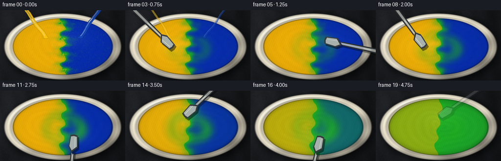
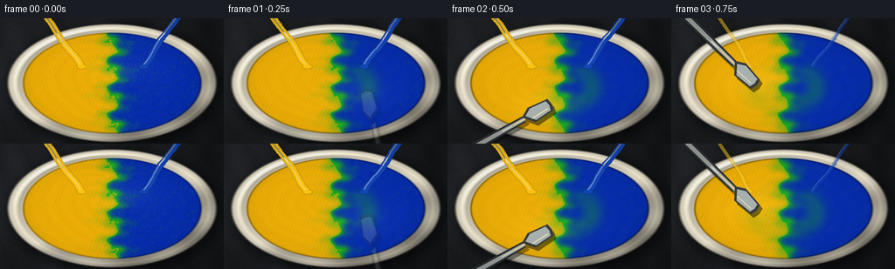
展开代码变化
--- 上一保存版本
+++ 本次保存版本
@@ -75,9 +75,9 @@
light = np.clip(1.10 - 0.45 * (XX / SIM_W) + 0.18 * (1.0 - YY / SIM_H), 0.35, 1.2)
base = np.stack(
[
- (0.075 + 0.020 * grain) * light,
- (0.082 + 0.022 * grain) * light,
- (0.095 + 0.028 * grain) * light,
+ (0.105 + 0.023 * grain) * light,
+ (0.112 + 0.025 * grain) * light,
+ (0.123 + 0.030 * grain) * light,
],
axis=-1,
)
@@ -128,7 +128,7 @@
r = np.sqrt(dx * dx + dy * dy) / (RY * 0.83)
# Differential rotation: fast near the middle, nearly still at the ceramic wall.
- angular = 4.1 * np.exp(-0.78 * r * r) + 0.9
+ angular = 4.9 * np.exp(-0.78 * r * r) + 1.0
vx = -dy * angular / max(RY, 1.0)
vy = dx * angular / max(RY, 1.0)
@@ -143,7 +143,7 @@
ddy = YY - vcy
sigma = RY * 0.29 * scale
g = np.exp(-(ddx * ddx + ddy * ddy) / (2.0 * sigma * sigma))
- strength = (5.9 if sign > 0 else -4.3) * scale
+ strength = (7.2 if sign > 0 else -5.3) * scale
vx += -ddy / sigma * strength * g
vy += ddx / sigma * strength * g
@@ -177,11 +177,11 @@
new_blue += mix * (mean - new_blue)
# Late-stage homogenization gives a convincing "fully blended" finish.
- if t > 3.35:
- blend = np.clip((t - 3.35) / 1.55, 0.0, 1.0)
+ if t > 3.10:
+ blend = np.clip((t - 3.10) / 1.65, 0.0, 1.0)
blend = blend * blend * (3.0 - 2.0 * blend)
target = 0.5 * (new_yellow + new_blue)
- amount = 0.105 * blend
+ amount = 0.115 * blend
new_yellow += amount * (target - new_yellow)
new_blue += amount * (target - new_blue)
return new_yellow.astype(np.float32), new_blue.astype(np.float32)
@@ -189,14 +189,16 @@
def mix_pigment(yellow, blue, t):
total = yellow + blue + 1e-5
- w = np.clip(blue / total, 0.0, 1.0)
+ raw_w = np.clip(blue / total, 0.0, 1.0)
# A two-stage yellow -> green -> blue path approximates subtractive paint mixing.
- ycol = np.array([0.98, 0.72, 0.035], dtype=np.float32)
- gcol = np.array([0.075, 0.50, 0.16], dtype=np.float32)
- bcol = np.array([0.035, 0.16, 0.64], dtype=np.float32)
- lower = (1.0 - 2.0 * w)[..., None] * ycol + (2.0 * w)[..., None] * gcol
- upper = (2.0 - 2.0 * w)[..., None] * gcol + (2.0 * w - 1.0)[..., None] * bcol
- color = np.where((w < 0.5)[..., None], lower, upper)
+ # The curve concentrates on the bright green produced by equal amounts.
+ w = np.where(raw_w < 0.5, 0.42 * raw_w, 0.58 * raw_w + 0.21)
+ ycol = np.array([1.00, 0.73, 0.025], dtype=np.float32)
+ gcol = np.array([0.12, 0.72, 0.13], dtype=np.float32)
+ bcol = np.array([0.025, 0.18, 0.73], dtype=np.float32)
+ lower = (1.0 - w / 0.42)[..., None] * ycol + (w / 0.42)[..., None] * gcol
+ upper = (1.0 - (w - 0.50) / 0.29)[..., None] * gcol + ((w - 0.50) / 0.29)[..., None] * bcol
+ color = np.where((raw_w < 0.5)[..., None], lower, upper)
# Fine pigment grain remains visible after mixing.
grain = (
@@ -204,11 +206,11 @@
+ np.sin(XX * 1.47 - YY * 0.91)
+ 0.55 * np.sin(XX * 2.33 + YY * 1.81)
)
- color *= (1.0 + 0.018 * grain[..., None])
+ color *= (1.0 + 0.012 * grain[..., None])
# Wet paint has a darker, saturated body and bright reflected highlights.
coverage = np.clip(total / 0.92, 0.0, 1.0)
- color *= (0.72 + 0.28 * coverage[..., None])
+ color *= (0.82 + 0.18 * coverage[..., None])
return np.clip(color, 0.0, 1.0)
@@ -219,12 +221,12 @@
rim_outer = 1.0 - smoothstep(0.965, 1.005, RR)
rim_inner = 1.0 - smoothstep(INNER_R - 0.01, INNER_R + 0.012, RR)
rim_band = np.clip(rim_outer - rim_inner, 0.0, 1.0)
- rim_shade = np.clip(0.83 - 0.25 * QX - 0.30 * QY + 0.10 * np.sin(8.0 * np.arctan2(QY, QX)), 0.36, 1.0)
+ rim_shade = np.clip(0.94 - 0.22 * QX - 0.27 * QY + 0.08 * np.sin(8.0 * np.arctan2(QY, QX)), 0.48, 1.0)
ceramic = np.stack(
[
- 0.73 * rim_shade,
- 0.70 * rim_shade,
- 0.63 * rim_shade,
+ 0.89 * rim_shade,
+ 0.86 * rim_shade,
+ 0.78 * rim_shade,
],
axis=-1,
)
@@ -232,14 +234,14 @@
# Bowl interior wall recedes below the lip.
wall_mask = np.clip(rim_inner - PAINT_MASK, 0.0, 1.0)
- wall_light = np.clip(0.63 - 0.34 * QX - 0.39 * QY + 0.18 * (RR - INNER_R) / 0.14, 0.16, 0.70)
- wall = np.stack([0.62 * wall_light, 0.59 * wall_light, 0.53 * wall_light], axis=-1)
+ wall_light = np.clip(0.83 - 0.30 * QX - 0.35 * QY + 0.17 * (RR - INNER_R) / 0.14, 0.32, 0.92)
+ wall = np.stack([0.84 * wall_light, 0.81 * wall_light, 0.73 * wall_light], axis=-1)
color = color * (1.0 - wall_mask[..., None]) + wall * wall_mask[..., None]
# Rim highlights and shadow line.
theta = np.arctan2(QY, QX)
highlight = np.exp(-((RR - 0.922) / 0.021) ** 2) * (0.25 + 0.75 * np.clip(np.cos(theta + 2.25), 0.0, 1.0) ** 4)
- color += highlight[..., None] * np.array([0.26, 0.25, 0.20], dtype=np.float32)
+ color += highlight[..., None] * np.array([0.32, 0.31, 0.25], dtype=np.float32)
lower_shadow = np.exp(-((RR - 0.875) / 0.022) ** 2) * np.clip(-np.cos(theta - 0.78), 0.0, 1.0)
color *= (1.0 - 0.20 * lower_shadow[..., None])
@@ -255,7 +257,7 @@
)
ripple = 0.5 + 0.5 * np.sin(ripple_phase)
ripple *= np.clip(0.22 + (t / 5.0) * 0.35, 0.0, 0.55)
- spoon_wake = np.exp(-(((XX - sx) / (RX * 0.46)) ** 2 + ((YY - sy) / (RY * 0.38)) ** 2))
+ spoon_wake = np.exp(-(((XX - sx) / (RX * 0.34)) ** 2 + ((YY - sy) / (RY * 0.27)) ** 2))
light_dir = np.array([-0.54, -0.74], dtype=np.float32)
relx = (XX - CX) / RX
@@ -264,8 +266,8 @@
slope_y = 0.035 * np.sin(ripple_phase) + 0.055 * rely * spoon_wake
diffuse = np.clip(0.92 - 0.18 * (slope_x * light_dir[0] + slope_y * light_dir[1]), 0.55, 1.14)
paint *= diffuse[..., None]
- sheen = (0.07 * ripple + 0.20 * spoon_wake) * np.clip(1.0 - RR, 0.0, 1.0)
- paint += sheen[..., None] * np.array([0.68, 0.70, 0.56], dtype=np.float32)
+ sheen = (0.045 * ripple + 0.09 * spoon_wake) * np.clip(1.0 - RR, 0.0, 1.0)
+ paint += sheen[..., None] * np.array([0.52, 0.55, 0.42], dtype=np.float32)
# Wet rim where paint meets the bowl wall.
contact = np.exp(-((RR - INNER_R + 0.015) / 0.012) ** 2)
候选 03播放与检查图
点击播放 · 原生 RGB 像素
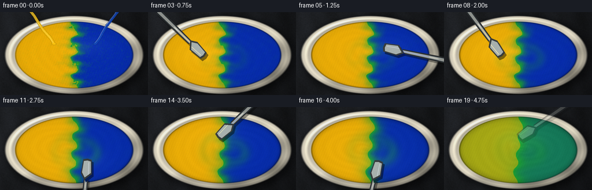
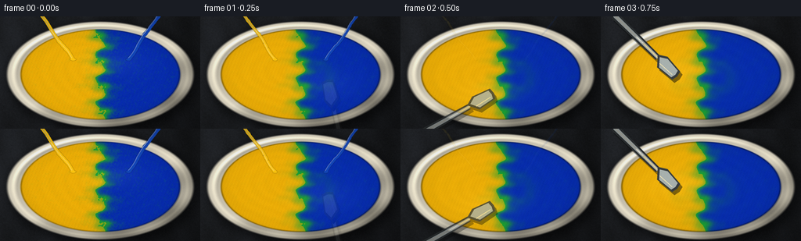
展开代码变化
--- 上一保存版本
+++ 本次保存版本
@@ -168,20 +168,20 @@
new_yellow *= PAINT_MASK
new_blue *= PAINT_MASK
- # Paint at the moving blade is locally homogenized.
+ # A small amount of irreversible mixing happens wherever the blade cuts.
sx, sy, _ = spoon_position(t)
- g = np.exp(-((XX - sx) ** 2 + (YY - sy) ** 2) / (2.0 * (RY * 0.11) ** 2))
- mix = np.clip(0.12 * g + max(0.0, t - 3.55) * 0.018, 0.0, 0.17)
+ g = np.exp(-((XX - sx) ** 2 + (YY - sy) ** 2) / (2.0 * (RY * 0.075) ** 2))
+ mix = np.clip(0.055 * g, 0.0, 0.06)
mean = 0.5 * (new_yellow + new_blue)
new_yellow += mix * (mean - new_yellow)
new_blue += mix * (mean - new_blue)
- # Late-stage homogenization gives a convincing "fully blended" finish.
- if t > 3.10:
- blend = np.clip((t - 3.10) / 1.65, 0.0, 1.0)
+ # Diffusion combines with the repeated folds; final strokes finish the blend.
+ if t > 3.85:
+ blend = np.clip((t - 3.85) / 1.10, 0.0, 1.0)
blend = blend * blend * (3.0 - 2.0 * blend)
target = 0.5 * (new_yellow + new_blue)
- amount = 0.115 * blend
+ amount = 0.12 * blend
new_yellow += amount * (target - new_yellow)
new_blue += amount * (target - new_blue)
return new_yellow.astype(np.float32), new_blue.astype(np.float32)
@@ -192,12 +192,12 @@
raw_w = np.clip(blue / total, 0.0, 1.0)
# A two-stage yellow -> green -> blue path approximates subtractive paint mixing.
# The curve concentrates on the bright green produced by equal amounts.
- w = np.where(raw_w < 0.5, 0.42 * raw_w, 0.58 * raw_w + 0.21)
+ w = np.where(raw_w < 0.5, 0.44 * raw_w, 0.56 * raw_w + 0.22)
ycol = np.array([1.00, 0.73, 0.025], dtype=np.float32)
- gcol = np.array([0.12, 0.72, 0.13], dtype=np.float32)
+ gcol = np.array([0.11, 0.66, 0.20], dtype=np.float32)
bcol = np.array([0.025, 0.18, 0.73], dtype=np.float32)
- lower = (1.0 - w / 0.42)[..., None] * ycol + (w / 0.42)[..., None] * gcol
- upper = (1.0 - (w - 0.50) / 0.29)[..., None] * gcol + ((w - 0.50) / 0.29)[..., None] * bcol
+ lower = (1.0 - w / 0.44)[..., None] * ycol + (w / 0.44)[..., None] * gcol
+ upper = (1.0 - (w - 0.50) / 0.28)[..., None] * gcol + ((w - 0.50) / 0.28)[..., None] * bcol
color = np.where((raw_w < 0.5)[..., None], lower, upper)
# Fine pigment grain remains visible after mixing.
@@ -277,9 +277,9 @@
def add_pour_streams(image, t):
- if t > 1.02:
+ if t > 0.50:
return image
- strength = float(np.clip((1.05 - t) / 0.48, 0.0, 1.0))
+ strength = float(np.clip((0.53 - t) / 0.29, 0.0, 1.0))
rgba = Image.new("RGBA", (SIM_W, SIM_H), (0, 0, 0, 0))
draw = ImageDraw.Draw(rgba)
for side, color in (
@@ -296,7 +296,7 @@
x = start_x * (1.0 - u) + end_x * u + 4.0 * np.sin(u * 9.0 + t * 12.0) * u
y = start_y * (1.0 - u) + end_y * u
points.append((x, y))
- width = max(7, int(15 * strength))
+ width = max(5, int(10 * strength))
draw.line(points, fill=color, width=width, joint="curve")
draw.line([(x - 2, y - 2) for x, y in points], fill=(255, 255, 255, 100), width=max(1, width // 6))
px, py = points[-1]
@@ -308,10 +308,10 @@
def draw_spoon(image, t):
- if t < 0.18 or t > 4.86:
+ if t < 0.20 or t > 4.92:
return image
- appear = float(np.clip((t - 0.18) / 0.32, 0.0, 1.0))
- disappear = float(np.clip((4.86 - t) / 0.42, 0.0, 1.0))
+ appear = float(np.clip((t - 0.20) / 0.38, 0.0, 1.0))
+ disappear = float(np.clip((4.92 - t) / 0.45, 0.0, 1.0))
opacity = min(appear, disappear)
sx, sy, phase = spoon_position(t)
候选 04播放与检查图
点击播放 · 原生 RGB 像素

展开代码变化
--- 上一保存版本
+++ 本次保存版本
@@ -162,7 +162,7 @@
new_blue = bilinear_sample(blue, bx, by)
# Weak diffusion, with extra micro-mixing as lamellae become thin.
- radius = 1 if t < 2.9 else 2
+ radius = 1 if t < 2.9 else (2 if t < 3.9 else 3)
new_yellow = box_blur(new_yellow, radius=radius, passes=1)
new_blue = box_blur(new_blue, radius=radius, passes=1)
new_yellow *= PAINT_MASK
@@ -177,11 +177,11 @@
new_blue += mix * (mean - new_blue)
# Diffusion combines with the repeated folds; final strokes finish the blend.
- if t > 3.85:
- blend = np.clip((t - 3.85) / 1.10, 0.0, 1.0)
+ if t > 3.45:
+ blend = np.clip((t - 3.45) / 1.50, 0.0, 1.0)
blend = blend * blend * (3.0 - 2.0 * blend)
target = 0.5 * (new_yellow + new_blue)
- amount = 0.12 * blend
+ amount = 0.16 * blend
new_yellow += amount * (target - new_yellow)
new_blue += amount * (target - new_blue)
return new_yellow.astype(np.float32), new_blue.astype(np.float32)
@@ -192,12 +192,12 @@
raw_w = np.clip(blue / total, 0.0, 1.0)
# A two-stage yellow -> green -> blue path approximates subtractive paint mixing.
# The curve concentrates on the bright green produced by equal amounts.
- w = np.where(raw_w < 0.5, 0.44 * raw_w, 0.56 * raw_w + 0.22)
+ w = np.where(raw_w < 0.5, 0.28 * raw_w, 0.22 * raw_w + 0.39)
ycol = np.array([1.00, 0.73, 0.025], dtype=np.float32)
- gcol = np.array([0.11, 0.66, 0.20], dtype=np.float32)
+ gcol = np.array([0.12, 0.66, 0.16], dtype=np.float32)
bcol = np.array([0.025, 0.18, 0.73], dtype=np.float32)
- lower = (1.0 - w / 0.44)[..., None] * ycol + (w / 0.44)[..., None] * gcol
- upper = (1.0 - (w - 0.50) / 0.28)[..., None] * gcol + ((w - 0.50) / 0.28)[..., None] * bcol
+ lower = (1.0 - w / 0.28)[..., None] * ycol + (w / 0.28)[..., None] * gcol
+ upper = (1.0 - (w - 0.50) / 0.11)[..., None] * gcol + ((w - 0.50) / 0.11)[..., None] * bcol
color = np.where((raw_w < 0.5)[..., None], lower, upper)
# Fine pigment grain remains visible after mixing.
候选 05播放与检查图
点击播放 · 原生 RGB 像素

展开代码变化
--- 上一保存版本
+++ 本次保存版本
@@ -182,6 +182,14 @@
blend = blend * blend * (3.0 - 2.0 * blend)
target = 0.5 * (new_yellow + new_blue)
amount = 0.16 * blend
+ new_yellow += amount * (target - new_yellow)
+ new_blue += amount * (target - new_blue)
+
+ # The last vigorous strokes remove the final broad streaks.
+ if t > 4.28:
+ finish = np.clip((t - 4.28) / 0.72, 0.0, 1.0)
+ target = 0.5 * (new_yellow + new_blue)
+ amount = 0.48 * finish * finish
new_yellow += amount * (target - new_yellow)
new_blue += amount * (target - new_blue)
return new_yellow.astype(np.float32), new_blue.astype(np.float32)
候选 06播放与检查图
点击播放 · 原生 RGB 像素

展开代码变化
代码未变化；重新保存了产物。
可观测工具轨迹
实际执行的命令与返回图片。
命令 1exit 0
/bin/bash -c "pwd && rg --files -g 'prompt.txt' -g 'GENERATION_RULES.md' -g 'task_spec.json' -g '"'!**/.git/**'"'"
命令 2exit 0
/bin/bash -c 'git status --short && ls -la'
命令 3exit 0
/bin/bash -c 'cat prompt.txt'
命令 4exit 0
/bin/bash -c 'cat GENERATION_RULES.md'
命令 5exit 0
/bin/bash -c 'cat task_spec.json'
命令 6exit 0
/bin/bash -c "sed -n '1,260p' artifact_io.py"
命令 7exit 0
/bin/bash -c 'python generate.py'
命令 8exit 0
/bin/bash -c 'mkdir -p .tmp/candidate_01 && cp -a frames inspection.png transition_check.png pixels.npz index.html .tmp/candidate_01/ && python generate.py'
命令 9exit 0
/bin/bash -c "python - <<'PY'
from PIL import Image
import numpy as np
for i in [0,1,2,3,4,5,6,7,8,9,10,12,14,16,18,19]:
im=np.asarray(Image.open(f'frames/{i:02d}.png')).astype(float)/255
yy,xx=np.mgrid[:144,:256]
r=np.sqrt(((xx-128)/118)**2+((yy-75)/67)**2)
pix=im[r<.76]
# filter paint interior excluding steel blue-gray and beige bowl
sat=pix.max(1)-pix.min(1)
p=pix[(sat>.10)&(pix[:,0]+pix[:,1]+pix[:,2]<2.5)]
print(i, 'mean', np.round(p.mean(0),2), 'med', np.round(np.median(p,0),2), 'n',len(p))
PY"命令 10exit 0
/bin/bash -c 'mkdir -p .tmp/candidate_02 && cp -a frames inspection.png transition_check.png pixels.npz index.html .tmp/candidate_02/ && python generate.py'
命令 11exit 0
/bin/bash -c "python - <<'PY'
from PIL import Image
import numpy as np
for i in range(20):
im=np.asarray(Image.open(f'frames/{i:02d}.png')).astype(float)/255
yy,xx=np.mgrid[:144,:256]
r=np.sqrt(((xx-128)/118)**2+((yy-74)/67)**2)
p=im[r<.70]
sat=p.max(1)-p.min(1)
p=p[(sat>.08)&(p[:,0]+p[:,1]+p[:,2]<2.5)]
print(i, np.round(np.median(p,0),2), np.round(p.mean(0),2))
PY"命令 12exit 0
/bin/bash -c 'mkdir -p .tmp/candidate_03 && cp -a frames inspection.png transition_check.png pixels.npz index.html .tmp/candidate_03/ && python generate.py'
命令 13exit 0
/bin/bash -c 'mkdir -p .tmp/candidate_04 && cp -a frames inspection.png transition_check.png pixels.npz index.html .tmp/candidate_04/ && python generate.py'
命令 14exit 0
/bin/bash -c "python - <<'PY'
from pathlib import Path
import json, wave
import numpy as np
from PIL import Image
spec=json.loads(Path('task_spec.json').read_text())
z=np.load('pixels.npz')['pixels']
assert z.shape == (spec['height'], spec['width'], spec['frames']), z.shape
frames=[]
for i in range(spec['frames']):
im=Image.open(f'frames/{i:02d}.png')
assert im.size == (spec['width'],spec['height']) and im.mode == 'RGB'
frames.append(np.asarray(im,dtype=np.uint8))
packed=(frames[0][...,0].astype(np.uint32)<<16)|(frames[0][...,1].astype(np.uint32)<<8)|frames[0][...,2]
assert np.array_equal(packed, z[...,0])
# Temporal diagnostics: frame-to-frame differences and final-frame uniformity.
diff=np.array([np.abs(frames[i].astype(np.int16)-frames[i-1].astype(np.int16)).mean() for i in range(1,len(frames))])
yy,xx=np.mgrid[:spec['height'],:spec['width']]
r=np.sqrt(((xx-128)/116)**2+((yy-74)/65)**2)
p=packed[r<.70]
print('frames',len(frames),'size',frames[0].shape,'npz',z.shape)
print('mean consecutive RGB delta',round(float(diff.mean()),3),'range',round(float(diff.min()),3),round(float(diff.max()),3))
print('index bytes',Path('index.html').stat().st_size,'npz bytes',Path('pixels.npz').stat().st_size)
print('final-frame green-dominant fraction',round(float(((p>>8&255)>(p>>16&255)+8).mean()),3))
PY
ls -lh generate.py index.html pixels.npz inspection.png frames | head"视觉工具实际返回图片 1
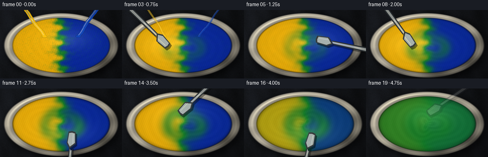
视觉工具实际返回图片 2
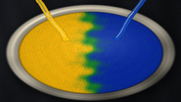
视觉工具实际返回图片 3
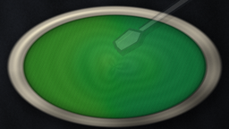
视觉工具实际返回图片 4

视觉工具实际返回图片 5

视觉工具实际返回图片 6

视觉工具实际返回图片 7
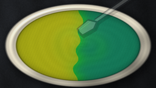
视觉工具实际返回图片 8
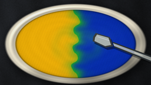
视觉工具实际返回图片 9
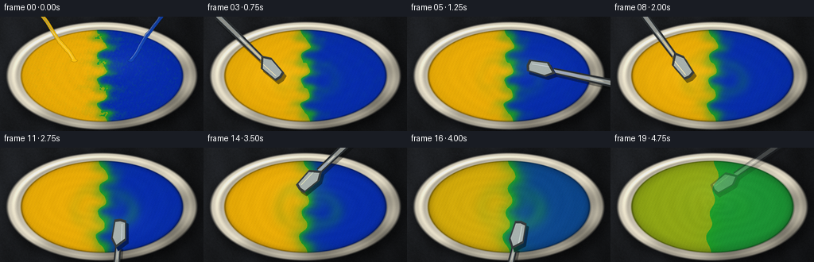
视觉工具实际返回图片 10
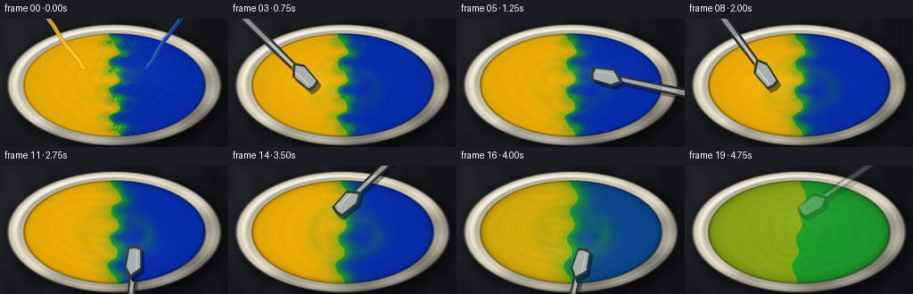
视觉工具实际返回图片 11
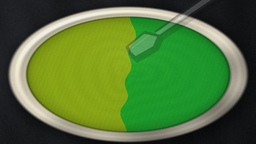
保存候选 6 份；完成命令 14 次；可验证图片返回 11 张。原始 API 响应与完整日志保留在本地。